Creative Direction & Brand Systems
Creative concept development · Brand identity systems · Art direction · Visual guidelines · Design libraries and templates · Brand governance
Creative & Design Operations
My recent practice spans creative leadership, global design services, and digital operations, building on earlier experience in architecture and design research. Across successive roles, I led multidisciplinary teams and coordinated work across regions, internal stakeholders, agencies, and vendors. My responsibilities combined creative direction and production with the frameworks that support delivery: service definitions, resource planning, workflow automation, quality standards, and performance reporting. Through brand integrations, website consolidation, conferences, and interactive experiences, I connected organizational priorities with creative execution, helping teams deliver cohesive work while improving how services were planned, managed, and evaluated.
Creative concept development · Brand identity systems · Art direction · Visual guidelines · Design libraries and templates · Brand governance
Creative service design · Service catalogues · Intake and prioritization · Resource and capacity planning · Workflow automation · KPI and SLA frameworks
Multidisciplinary team leadership · Coaching and development · Stakeholder alignment · Cross-regional coordination · Agency and vendor management · Collaboration with marketing and engineering
Digital and physical experiences · Event and conference design · Environmental branding · Interactive experiences · Multichannel creative production · Production planning and quality reviews
Website consolidation · UX/UI governance · Technology and asset audits · Post-acquisition integration planning · Digital asset management · Performance dashboards and reporting
Coordinated brand updates across digital, physical, and campaign assets used by teams across regions.
Led and facilitated marketing integration activities, aligning brands, websites, and creative delivery.
Managed conference planning, logistics, vendors, creative direction, and audiovisual delivery across multiple markets.
Aligned stakeholders, agencies, and vendors to deliver marketing initiatives across regions.
Led multidisciplinary teams spanning design, motion, UX/UI, and experiential work.
Oversaw the team’s technology portfolio, including licence management, payments, and tool administration.
Case studies in creative strategy, design operations, and experience design,
from problem framing to implementation.
Establishing a unified creative function to standardize processes, strengthen quality, and align regional teams through a shared operational framework.
Read case study
Bringing multiple websites into a shared content management system to streamline governance and support localized regional experiences.
Read case studyDeveloping an interactive digital service catalogue from a service-level agreement to clarify creative services, expectations, and delivery processes.
Read case studyManaging user conference delivery across multiple markets, spanning project planning, logistics, vendor coordination, creative direction, design approvals, and audiovisual direction.
Read case study
Translating a complex narrative into an interactive digital installation that helps audiences explore challenges and potential solutions.
Read case studyGet in touch to discuss opportunities
or potential collaborations.
Explore my professional background
and connect with me.